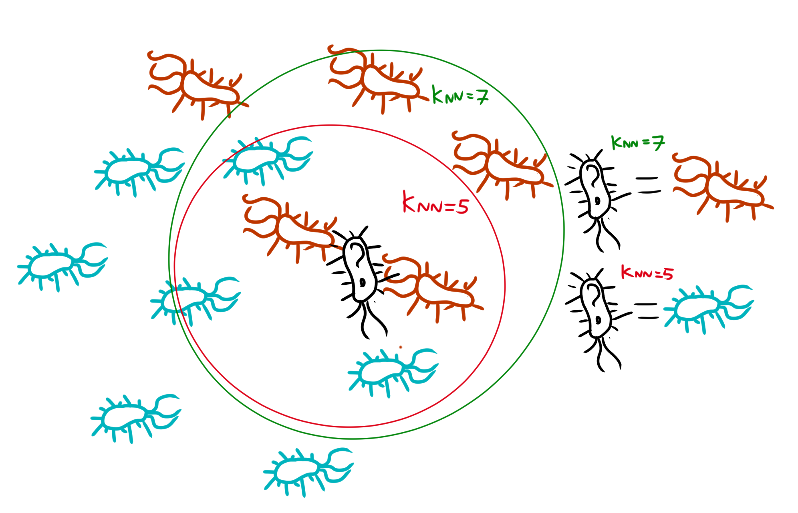
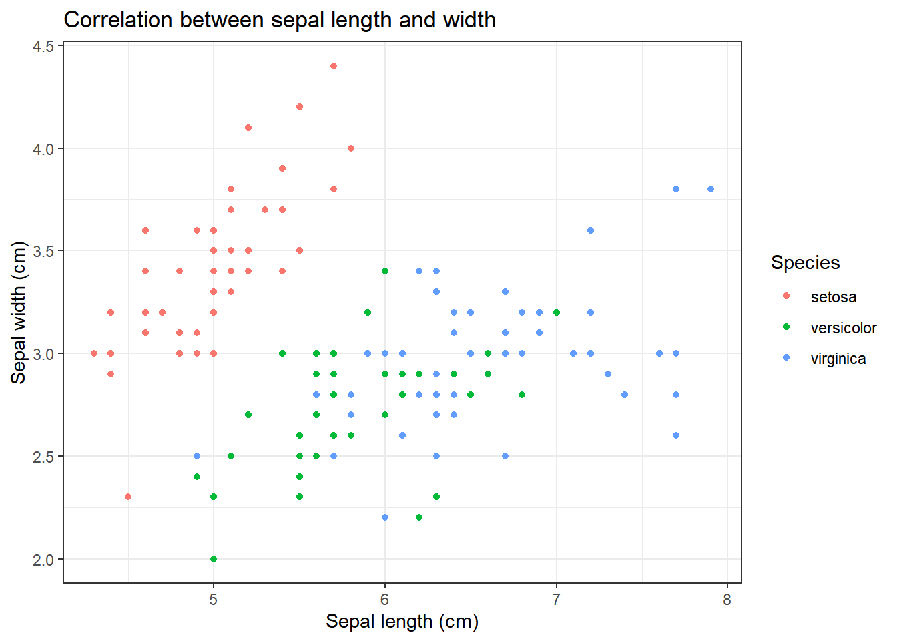
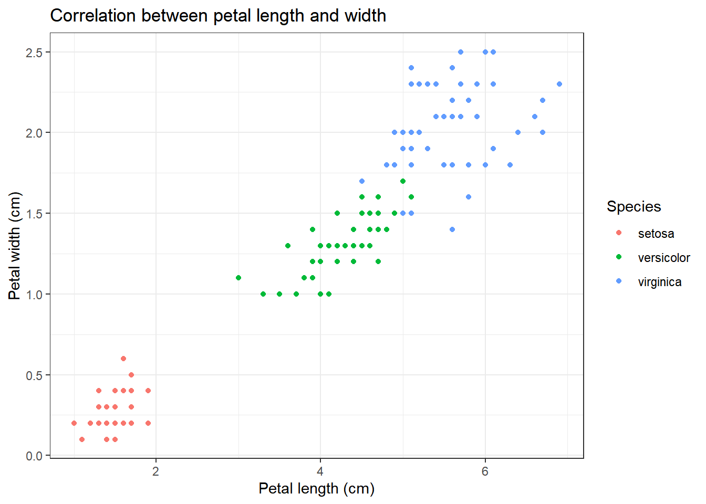

KNN Machine-learning
Frontpage Data visualisation Parametizing data Directory structure R-package SQL Zotero Reproductibility Future endeavours Free research (Machine learning) CV Bibliography
In order to prove my skills in learning a new skill on my own, I decided to delve into a completely new subject for me: machine learning in R, in microbiology. Originally, I planned on studying this site (Majchrowska 2021) and focussing on image-based machine learning for identifying bacterial colonies. However, this was too complicated for a beginner. Thus, I started by following this guide (Willems 2018) on KNN-based machine learning within R.
This guide guides you through KNN-based machine learning using the in-built R database “iris”. KNN-based machine learning stands for “K-nearest-neighbour”. In this technique, a computer model takes a dataset used for learning, and determines the distance between each of the different training data-points. Then, it places the to-be-determined datapoint into this web of training-datapoints, and it’ll determine the K-amount of nearest neighbours (if K=5, the 5 nearest neighbours). Then it’ll classify the to-be-determined datapoint based on which category has the most datapoints within that K range. Underneath is a example of this.

Important is to first understand your data. Thus, to begin, I looked it up some background information about what data iris contains.
Iris contains 5 columns: Sepal width/length, petal width/length and species. A “sepal” is a modified leave which encases and protects the flower before it blooms. A “petal” is a modified leave that surrounds the reproductive part of the flower
 Images taken from Dodona, universiteit Gent
Images taken from Dodona, universiteit Gent
We’ll perform some basic visualisation on the data, in order to get a feel for what the data represents
iris %>% ggplot(aes(x=Sepal.Length, y=Sepal.Width, colour=Species))+
geom_point()+
theme_bw()+
labs(
title="Correlation between sepal length and width",
x="Sepal length (cm)",
y="Sepal width (cm)"
)
iris %>% ggplot(aes(x=Petal.Length, y=Petal.Width, colour=Species))+
geom_point()+
theme_bw()+
labs(
title="Correlation between petal length and width",
x="Petal length (cm)",
y="Petal width (cm)"
)
We can clearly see that there appears to be some form of correlation between the length and the width of a petal/sepal.
To further study the dataset, a table off “species”, the factor that we’d like to predict using our KNN model, will be created
table(iris$Species)##
## setosa versicolor virginica
## 50 50 50We can see that our dataset has 50 of each of the different flower types.
Finally, we’ll also have a look at the range of data in our data-set
knitr::kable(summary(iris))| Sepal.Length | Sepal.Width | Petal.Length | Petal.Width | Species | |
|---|---|---|---|---|---|
| Min. :4.300 | Min. :2.000 | Min. :1.000 | Min. :0.100 | setosa :50 | |
| 1st Qu.:5.100 | 1st Qu.:2.800 | 1st Qu.:1.600 | 1st Qu.:0.300 | versicolor:50 | |
| Median :5.800 | Median :3.000 | Median :4.350 | Median :1.300 | virginica :50 | |
| Mean :5.843 | Mean :3.057 | Mean :3.758 | Mean :1.199 | NA | |
| 3rd Qu.:6.400 | 3rd Qu.:3.300 | 3rd Qu.:5.100 | 3rd Qu.:1.800 | NA | |
| Max. :7.900 | Max. :4.400 | Max. :6.900 | Max. :2.500 | NA |
The lowest value present in the variables is “0.1”, under Petal.Width. The highest value is “7.9”, under “Sepal.Length”. This gives a difference of approximately factor 10-100, which is within acceptable levels. If it were not, and the factor difference would be above 1000, we would have to normalise the data with a function like the one below
normalize<-function(x){
num<-x-min(x)
denom<-max(x)-min(x)
return(num/denom)
}
as.data.frame(lapply(iris[1:4], normalize)) %>% mutate(Species=iris$Species) %>% head()## Sepal.Length Sepal.Width Petal.Length Petal.Width Species
## 1 0.22222222 0.6250000 0.06779661 0.04166667 setosa
## 2 0.16666667 0.4166667 0.06779661 0.04166667 setosa
## 3 0.11111111 0.5000000 0.05084746 0.04166667 setosa
## 4 0.08333333 0.4583333 0.08474576 0.04166667 setosa
## 5 0.19444444 0.6666667 0.06779661 0.04166667 setosa
## 6 0.30555556 0.7916667 0.11864407 0.12500000 setosaIn order to properly train the algorythm, we must separate our data into 2 groups: a “training” group and a “test” group. The training dataset usually takes about 2/3rds of the dataset, while the test group is the other 1/3rd. Important is that the algorythm has equal amounts of test conditions: if the algorythm got 50 setosa, 50 versicolor and 0 virginica, it’d be impossible for it to recognize virginica. Thus, we’ll use “setseed” and “sample” to generate a sample.
set.seed(1234) #Set seed to "determine" the randomness"
ind<-sample(2, nrow(iris), replace=TRUE, prob=c(0.67, 0.33))
iris_training<-iris[ind==1,1:4] #Storing the training dataset
iris_testing<-iris[ind==2,1:4] #Storing the testing dataset
# We have the training and testing dataset, but we don't have the labels associated to those datasets. We have to store
#these seperately:
iris_trainlabels<-iris[ind==1,5]
iris_testlabels<-iris[ind==2,5]With both the training group and the test group set up, we can now feed these into the KNN algorythm, and set up a prediction for what the testlabels are
iris_pred<-class::knn(train = iris_training, test = iris_testing, cl = iris_trainlabels)
store<-iris_pred == iris_testlabels
table(store)## store
## FALSE TRUE
## 1 39This gives an output of 1 mismatch and 39 correct matches, a pretty accurate result. To further study the result, we’ll use the package called “gmodels”
library(gmodels)
CrossTable(x = iris_testlabels, y=iris_pred)##
##
## Cell Contents
## |-------------------------|
## | N |
## | Chi-square contribution |
## | N / Row Total |
## | N / Col Total |
## | N / Table Total |
## |-------------------------|
##
##
## Total Observations in Table: 40
##
##
## | iris_pred
## iris_testlabels | setosa | versicolor | virginica | Row Total |
## ----------------|------------|------------|------------|------------|
## setosa | 12 | 0 | 0 | 12 |
## | 19.600 | 3.900 | 4.500 | |
## | 1.000 | 0.000 | 0.000 | 0.300 |
## | 1.000 | 0.000 | 0.000 | |
## | 0.300 | 0.000 | 0.000 | |
## ----------------|------------|------------|------------|------------|
## versicolor | 0 | 12 | 0 | 12 |
## | 3.600 | 16.823 | 4.500 | |
## | 0.000 | 1.000 | 0.000 | 0.300 |
## | 0.000 | 0.923 | 0.000 | |
## | 0.000 | 0.300 | 0.000 | |
## ----------------|------------|------------|------------|------------|
## virginica | 0 | 1 | 15 | 16 |
## | 4.800 | 3.392 | 13.500 | |
## | 0.000 | 0.062 | 0.938 | 0.400 |
## | 0.000 | 0.077 | 1.000 | |
## | 0.000 | 0.025 | 0.375 | |
## ----------------|------------|------------|------------|------------|
## Column Total | 12 | 13 | 15 | 40 |
## | 0.300 | 0.325 | 0.375 | |
## ----------------|------------|------------|------------|------------|
##
## This table contains the original data of the testlabels (the first column contains the species, the last column contains the original amount of these species in the dataset), and the prediction of the testlabels based on the KNN model (the first row contains the species, the last row contains the prediction of the amount of these species). It tells us that the algorythm succesfully identified all setosa sample, but classified 1 “virginica” monster as a “versicolor” sample.
This is machine learning in one of its most basic forms. Now, in order to test if I’ve truly understood what’s given here in this KNN-guide, I’ve performed this entire workflow for another dataset, the “Glass” dataset from mlbench.